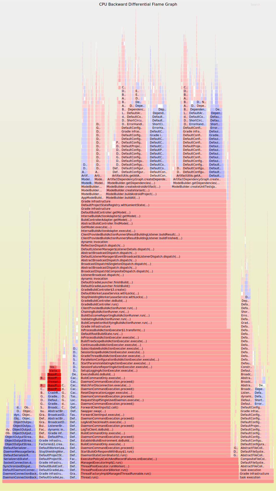

Challenges of maintaining OSS
The case of Gradle
Cédric Champeau (@CedricChampeau)
Who am I?
speaker {
name 'Cédric Champeau'
company 'Gradle Inc'
successes 'Static type checker',
'Static compilation',
'Traits',
'Markup template engine',
'DSLs'
failures Stream.of(bugs),
twitter '@CedricChampeau',
github 'melix',
extraDescription '''Groovy in Action 2 co-author
Misc OSS contribs'''
}What is Gradle?
Gradle’s purpose
Gradle is a build and automation tool.
JVM based
Implemented in Java
100% Free Open Source - Apache Standard License 2.0
Agnostic Build System
Java ecosystem
Groovy, Kotlin, Scala, …
Native ecosystem
C, C++, Swift, …
Android
Misc
Go, Asciidoctor, …
Gradle in figures
9.0M downloads / month)
3K+ plugins
300K builds/week @LinkedIn
dot release every ~6 weeks
major release every ~year
Gradle Inc.
The company behind Gradle.
Build Happiness
Employs full time engineers
30+ Gradle Engineers (~half on Gradle OSS)
Providing Gradle Build Scans and Gradle Enterprise
(Gradle consulting, support, development services etc.)
(Training: online, public and in-house)
Gradle Enterprise
Commercial product - Developer Productivity
Build Scans
persistent shareable record
of what happened during a build
Build Cache
reuse of build outputs
On premise install, distributed cache, build history, dashboards, export API etc…
Gradle Enterprise

Free Build Scans on SaaS
Already used by many OSS projects
gradle --scan
Gradle is hiring!
Fully distributed development team
Exciting project used by millions
Build tool team and Gradle enterprise positions
If anything you hear from now on sounds like a great problem to solve,
Talk to us!
Java version
Gradle
Gradle is a JVM tool
Used to build JVM apps (but not only)
To run Gradle
Java 8 up to Java 11
12 under test
Nice error message if trying to run on 6/7
Component being built
Same version as Gradle (embedded)
Any version of Java (forking)
Consequences
We only start using Java 8 features in code
Some modules still require Java 6 bytecode
Entry point (CLI)
Workers (because of communication)
Hard to untangle!
How do we test?
Different CI pipelines
full test suite on Java 11 (soon 12)
reduced test suites on Java 7 to 11
Different vendors (OpenJDK, IBM JDK)
Complicating factors
Gradle analyzes JARs
Requires ASM
ASM only supports official releases
People want to try early JDK releases…
Feature lifecycle
Incubating APIs
When a feature is introduced, always
@IncubatingDoesn’t mean beta, means may change or go away
Allows us to remove without deprecating
We haven’t been good at de-incubating
Incubation report
Typical deprecation handling
Deprecate in version
MAJORWarn users about deprecations
Remove in
MAJOR+1
Exceptions to the rule
If
MAJOR+1is close enough, deprecate for removal inMAJOR+2"soft deprecation" for very widely used features
e.g:
compileandruntimeconfigurationsvery hard to remove!
Preparing users for changes
Build scans report deprecations
Binary compatibility
Checking binary compatibility
Important for build authors (build scripts)
and for plugin authors
Use the
japicmp-gradle-pluginChecked on every commit
Changes must be accepted and documented
Binary compatibility report
Fixing binary compatibility
Sometimes we have to remove internal APIs
But some plugins use them/reference them
Often accidental leakage in public APIs (e.g
AbstractTask)Solution: runtime decoration of classes
Decorates classes with the missing methods
Advantage: source-compatible and binary-compatible
Runtime decoration use-cases
Conversion of plugins from Groovy to Java
Removal of internal/deprecated types
Smoke testing
Testing well known plugins
Test coverage is never enough
Despite our efforts, popular plugins use internal APIs
Smoke tests to discover breaking changes
Spring Dependency Management, Android, Shadow plugins
Netflix Nebula plugins (lint, recommender, …)
Asciidoctor, Spotbugs, Docker plugins etc…
Improvement process
If a user reports a regression
and that it’s a popular plugin
then add a smoke test for the plugin
Then consider a plugin API for missing pieces
The Tooling API
The Tooling API
Allows "embedding" Gradle
Mostly for IDEs
Must support older releases (backwards compatibility)
Must support newer releases (forward compatibility)
How it works
Communication protocol based on serialization
Daemon is required
Models passed through build invocations
Backwards compatibility
Handled similarly to the regular process
Forward compatiblity
Inteface-based protocol
Default implementation when missing methods
Cross-version testing
Performance testing
Performance is a feature
more than 100 performance tests
both synthetic projects and real world scenarios
tested on each commit
no merge until performance tests are green
Performance tests
cross-version performance tests
compares different versions, for a single scenario
cross-build performance tests
for a single version, compares different scenarios (eg. incremental vs clean build)
ad-hoc performance tests
for development purposes only
executes a performance test with profiling
generates nice flame graphs
Performance tests
Flame graphs

icicle graphs
Performance reports
Gradle profiler
See Gradle profiler on GitHub
Allows profiling your build
Generates flame graphs, memory snapshots, …
Documentation
Released alongside the distribution
Must be versioned
For long we missed links to older releases
Lesson learnt: never happy with docs
Non-technical aspects
Handling community
My problem is the most important
Handling community
I don’t understand why you do this
Handling community
This should be easy, fix it!
Handling community
Twitter summoning
Taking distance from swearing
Taking distaince from swearing
Guidelines
We had to add a Code of Conduct
Referenced in GitHub issue template
Competing priorities
Gradle is a commercial company
Offers a free-product (Gradle Build Tool)
Sponsored work (shipped into Build Tool)
Commercial product (Gradle Enterprise)
Conclusion
On CI
We use TeamCity
Each commit triggers ~500 builds
Lots of build outputs reused thanks to the build cache
Dramatically reduces feedback loop
Available for Apache Maven too!
Conclusion
Learnt things the hard way
Automation is key to success
Gradle Enterprise
On premise build cache and build scan solution
Out of the box solution for distributed build cache
Improved build scan feature set
Searchable build history
Build comparison